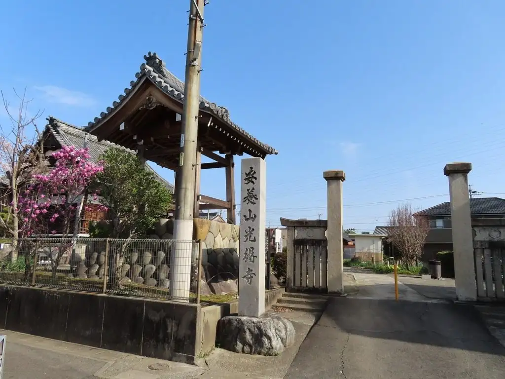
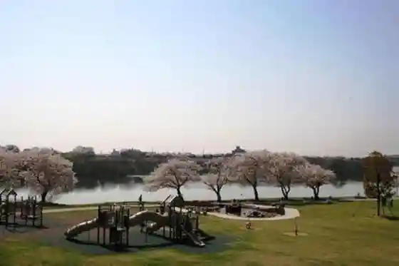
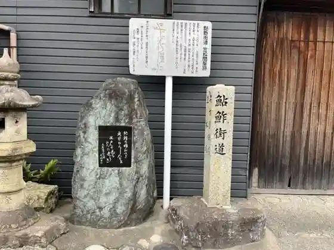
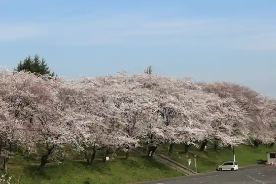
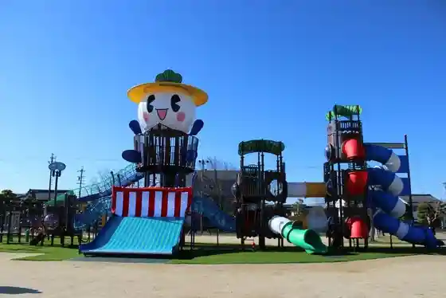

Kasamatsu, Gifu
Kasamatsu · Gifu
Kasamatsu
Highlighted on the Gifu map.

Sights
Kasamatsu Minato Park

Ayuzushi Kaido Kasamatsu Tonyato

Kasamatsu Cherry Blossoms (Nara Tsu Tsutsumi Hoka)

Kasamatsu Sports Park

Kasamatsu Rekishi Mirai Kan
Komeno no Tatakai Ato
Otsuka Gondayu no Tsuka
Mudo Tera no Tatakai Ato Hikari E Tera Bonsho